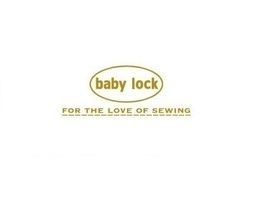
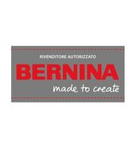

Vendita, assistenza e riparazione di macchine da cucire a Torino.
Roberto Maffioli opera nel settore delle macchine da cucire da oltre trent'anni. L'esperienza nasce all'interno dell'attività di famiglia, dove ha lavorato per molti anni insieme al padre e al fratello acquisendo una profonda conoscenza delle macchine domestiche, professionali e industriali.
Oggi continua questa tradizione offrendo vendita, assistenza tecnica, manutenzione e riparazioni specializzate.
Vendita di macchine da cucire familiari, professionali e industriali.
Supporto tecnico e consulenza specializzata.
Interventi professionali e manutenzione.


📍 Indirizzo
Via San Secondo 86
10128 Torino (TO)
📞 Telefono
+39 349 211 1248
🕒 Orari
Lunedì - Venerdì
08:30 - 18:30